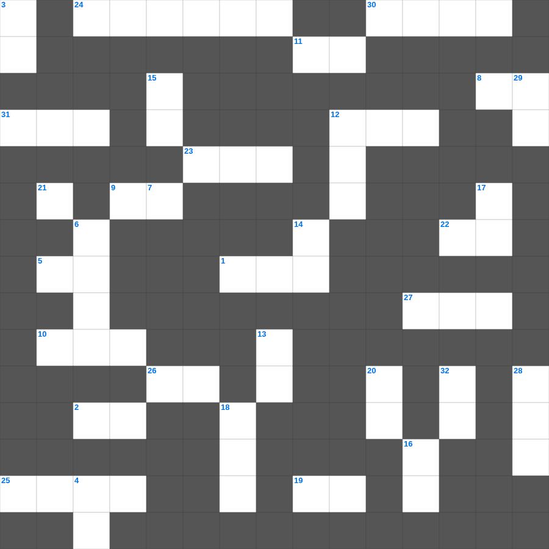

요한계시록의 환상
📌 서비스 정의
십자가로세로는 교회 주보와 주일학교에서 사용할 수 있는 성경 기반 가로세로 퍼즐 서비스입니다. 성경 인물, 사건, 핵심 구절을 바탕으로 제작되었습니다. 온라인 풀이 및 인쇄 기능을 제공합니다.
📖 이 글은 어떤 내용인가요?
요한계시록은 사도 요한이 받은 여러 환상을 통해 하나님 나라의 완성을 보여줍니다. 일곱 교회를 향한 메시지, 보좌와 어린양의 환상, 일곱 인과 나팔 심판, 그리고 새 하늘과 새 예루살렘의 환상이 대표적입니다. 이 퍼즐은 요한계시록에 나타난 주요 환상들을 정리합니다.
📚 핵심 포인트
일곱 교회를 향한 환상 · 보좌와 어린양의 환상 · 일곱 인과 일곱 나팔 · 짐승과 음녀의 환상 · 새 하늘과 새 예루살렘
무료로 즐기는 요한계시록의 요한계시록의 성경퀴즈! 35개의 힌트로 구성된 가로세로 낱말 퍼즐입니다. PC와 모바일 모두 지원되며, 정답을 바로 확인할 수 있어 혼자서도 쉽게 풀 수 있습니다.

📝 가로 힌트
1. 예수님이 십자가에 못 박히신 언덕
2. 세상에서 가장 먼저 난 사람은?
4. 예수님의 지상 직업
5. 진리의 이것 띠
8. 오래 참음, 자비, 이것
9. 바다의 물고기와 이것들
10. 복음을 전하는 자
11. 땅 끝까지 이르러 내 이것이 되리라
12. 한 해의 첫 열매를 드리는 절기
19. 혼인 잔치에 이것을 입지 않은 사람
22. 다윗이 왕이 되기 전의 직업
23. 에덴 동산에서 아담과 하와가 쫓겨난 일
24. 다윗이 밧세바를 범하고 나단에게 들은 말
25. 솔로몬 성전 건축에 쓰인 고급 나무
26. 사흘 만에 다시 살아나신 기적
27. 예수님이 제자들의 발을 씻기신 일
30. 금송아지를 만든 아론과 백성들
31. 보라 세상 죄를 지고 가는 하나님의 이것
📝 세로 힌트
3. 사랑, 희락, 이것
4. 친구를 위하여 자기 이것을 버리면 이보다 큰 사랑이 없음
6. 기름 부음 받은 자
7. 모세가 반석을 치자 나온 것
8. 잃어버린 한 마리 이것을 찾는 목자
12. 광야 생활을 기억하며 텐트를 치는 절기
13. 예수님이 예루살렘 입성 때 타신 것
14. 예수님을 판 제자
15. 무엇보다도 뜨겁게 서로 이것할지니 이것은 허다한 죄를 덮느니라
16. 르호보암 왕 때 나라가 둘로 나뉨
17. 너희가 서로 사랑하면 모든 사람이 너희가 내 이것인 줄 알리라
18. 나일강이 피로 변한 첫 번째 재앙
20. 열매를 맺게 하시는 분
21. 공의를 마르지 않는 이것 같이 흐르게 하라
28. 이 기적을 베푸신 분
29. 복음을 전하러 외국으로 나가는 일
32. 새 예루살렘 성곽의 첫 번째 기초석
🧑🏫 교회 교육 자료 활용
이 퍼즐은 주일학교 교재 추천 자료로 활용할 수 있고, 주일학교 주보에 넣기 좋은 분량으로 구성되어 있습니다. 수업용 주일학교 교안에 활동지로 붙이거나, 예배 후 복습용 주일학교 공과교재로 바로 사용할 수 있습니다.
🏷️ 키워드
요한계시록의 성경퀴즈, 요한계시록의, 십자가로세로, 성경퀴즈, 말씀퀴즈, 가로세로퍼즐, 주일학교 교재 추천, 주일학교 주보, 주일학교 교안, 주일학교 공과교재